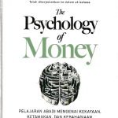

Informasi Buku
Judul : The Psychology of Money
Penulis : Morgan Hausel
Tahun Terbit : 2020
Halaman : 268 halaman
5092 Ulasan | 5 |
Lihat semua ulasanThe Psychologi of Money
Ispent my college years working as a valet at a nice hotel in Los Angeles. One frequent guest was a technology executive. He was a genius, having designed and patented a key component in Wi-Fi routers in his 20s. He had started and sold several companies. He was wildly successful. He also had a relationship with money I’d describe as a mix of insecurity and childish stupidity. He carried a stack of hundred dollar bills several inches thick. He showed it to everyone who wanted to see it and many who didn’t. He bragged openly and loudly about his wealth, often while drunk and always apropos of nothing. One day he handed one of my colleagues several thousand dollars of cash and said, “Go to the jewelry store down the street and get me a few $1,000 gold coins.” An hour later, gold coins in hand, the tech executive and his buddies gathered around by a dock overlooking the Pacific Ocean. They then proceeded to throw the coins into the sea, skipping them like rocks, cackling as they argued whose went furthest. Just for fun. Days later he shattered a lamp in the hotel’s restaurant. A manager told him it was a $500 lamp and he’d have to replace it. “You want five hundred dollars?” the executive asked incredulously, while pulling a brick of cash from his pocket and handing it to the manager. “Here’s five thousand dollars. Now get out of my face. And don’t ever insult me like that again.” You may wonder how long this behavior could last, and the answer was “not long.” I learned years later that he went broke. The premise of this book is that doing well with money has a little to do with how smart you are and a lot to do with how you behave. And behavior is hard to teach, even to really smart people. A genius who loses control of their emotions can be a financial disaster. The opposite is also true. Ordinary folks with no financial education can be wealthy if they have a handful of behavioral skills that have nothing to do with formal measures of intelligence. My favorite Wikipedia entry begins: “Ronald James Read was an American philanthropist, investor, janitor, and gas station attendant.” Ronald Read was born in rural Vermont. He was the first person in his family to graduate high school, made all the more impressive by the fact that he hitchhiked to campus each day. For those who knew Ronald Read, there wasn’t much else worth mentioning. His life was about as low key as they come. Read fixed cars at a gas station for 25 years and swept floors at JCPenney for 17 years. He bought a two-bedroom house for $12,000 at age 38 and lived there for the rest of his life. He was widowed at age 50 and never remarried. A friend recalled that his main hobby was chopping firewood. Read died in 2014, age 92. Which is when the humble rural janitor made international headlines. 2,813,503 Americans died in 2014. Fewer than 4,000 of them had a net worth of over $8 million when they passed away. Ronald Read was one of them. In his will the former janitor left $2 million to his stepkids and more than $6 million to his local hospital and library. Those who knew Read were baffled. Where did he get all that money? It turned out there was no secret. There was no lottery win and no inheritance. Read saved what little he could and invested it in blue chip stocks. Then he waited, for decades on end, as tiny savings compounded into more than $8 million. That’s it. From janitor to philanthropist. A few months before Ronald Read died, another man named Richard was in the news. Richard Fuscone was everything Ronald Read was not. A Harvard-educated Merrill Lynch executive with an MBA, Fuscone had such a successful career in finance that he retired in his 40s to become a philanthropist. Former Merrill CEO David Komansky praised Fuscone’s “business savvy, leadership skills, sound judgment and personal integrity.”¹ Crain’s business magazine once included him in a “40 under 40” list of successful businesspeople.² But then—like the gold-coin-skipping tech executive—everything fell apart. In the mid-2000s Fuscone borrowed heavily to expand an 18,000-square foot home in Greenwich, Connecticut that had 11 bathrooms, two elevators, two pools, seven garages, and cost more than $90,000 a month to maintain. Then the 2008 financial crisis hit. The crisis hurt virtually everyone’s finances. It apparently turned Fuscone’s into dust. High debt and illiquid assets left him bankrupt. “I currently have no income,” he allegedly told a bankruptcy judge in 2008. First his Palm Beach house was foreclosed. In 2014 it was the Greenwich mansion’s turn. Five months before Ronald Read left his fortune to charity, Richard Fuscone’s home—where guests recalled the “thrill of dining and dancing atop a see-through covering on the home’s indoor swimming pool”—was sold in a foreclosure auction for 75% less than an insurance company figured it was worth.³ Ronald Read was patient; Richard Fuscone was greedy. That’s all it took to eclipse the massive education and experience gap between the two. The lesson here is not to be more like Ronald and less like Richard—though that’s not bad advice. The fascinating thing about these stories is how unique they are to finance. In what other industry does someone with no college degree, no training, no background, no formal experience, and no connections massively outperform someone with the best education, the best training, and the best connections? I struggle to think of any. It is impossible to think of a story about Ronald Read performing a heart transplant better than a Harvard-trained surgeon. Or designing a skyscraper superior to the best-trained architects. There will never be a story of a janitor outperforming the world’s top nuclear engineers. But these stories do happen in investing. The fact that Ronald Read can coexist with Richard Fuscone has two explanations. One, financial outcomes are driven by luck, independent of intelligence and effort. That’s true to some extent, and this book will discuss it in further detail. Or, two (and I think more common), that financial success is not a hard science. It’s a soft skill, where how you behave is more important than what you know. I call this soft skill the psychology of money. The aim of this book is to use short stories to convince you that soft skills are more important than the technical side of money. I’ll do this in a way that will help everyone—from Read to Fuscone and everyone in between—make better financial decisions. These soft skills are, I’ve come to realize, greatly underappreciated. Finance is overwhelmingly taught as a math-based field, where you put data into a formula and the formula tells you what to do, and it’s assumed that you’ll just go do it. This is true in personal finance, where you’re told to have a six-month emergency fund and save 10% of your salary. It’s true in investing, where we know the exact historical correlations between interest rates and valuations. And it’s true in corporate finance, where CFOs can measure the precise cost of capital. It’s not that any of these things are bad or wrong. It’s that knowing what to do tells you nothing about what happens in your head when you try to do it. Two topics impact everyone, whether you are interested in them or not: health and money. The health care industry is a triumph of modern science, with rising life expectancy across the world. Scientific discoveries have replaced doctors’ old ideas about how the human body works, and virtually everyone is healthier because of it. The money industry—investing, personal finance, business planning—is another story. Finance has scooped up the smartest minds coming from top universities over the last two decades. Financial Engineering was the most popular major in Princeton’s School of Engineering a decade ago. Is there any evidence it has made us better investors? I have seen none. Through collective trial and error over the years we learned how to become better farmers, skilled plumbers, and advanced chemists. But has trial and error taught us to become better with our personal finances? Are we less likely to bury ourselves in debt? More likely to save for a rainy day? Prepare for retirement? Have realistic views about what money does, and doesn’t do, to our happiness? I’ve seen no compelling evidence. Most of the reason why, I believe, is that we think about and are taught about money in ways that are too much like physics (with rules and laws) and not enough like psychology (with emotions and nuance). And that, to me, is as fascinating as it is important. Money is everywhere, it affects all of us, and confuses most of us. Everyone thinks about it a little differently. It offers lessons on things that apply to many areas of life, like risk, confidence, and happiness. Few topics offer a more powerful magnifying glass that helps explain why people behave the way they do than money. It is one of the greatest shows on Earth. My own appreciation for the psychology of money is shaped by more than a decade of writing on the topic. I began writing about finance in early 2008. It was the dawn of a financial crisis and the worst recession in 80 years. To write about what was happening, I wanted to figure out what was happening. But the first thing I learned after the financial crisis was that no one could accurately explain what happened, or why it happened, let alone what should be done about it. For every good explanation there was an equally convincing rebuttal. Engineers can determine the cause of a bridge collapse because there’s agreement that if a certain amount of force is applied to a certain area, that area will break. Physics isn’t controversial. It’s guided by laws. Finance is different. It’s guided by people’s behaviors. And how I behave might make sense to me but look crazy to you. The more I studied and wrote about the financial crisis, the more I realized that you could understand it better through the lenses of psychology and history, not finance. To grasp why people bury themselves in debt you don’t need to study interest rates; you need to study the history of greed, insecurity, and optimism. To get why investors sell out at the bottom of a bear market you don’t need to study the math of expected future returns; you need to think about the agony of looking at your family and wondering if your investments are imperiling their future. I love Voltaire’s observation that “History never repeats itself; man always does.” It applies so well to how we behave with money. In 2018, I wrote a report outlining 20 of the most important flaws, biases, and causes of bad behavior I’ve seen affect people when dealing with money. It was called The Psychology of Money, and over one million people have read it. This book is a deeper dive into the topic. Some short passages from the report appear unaltered in this book. What you’re holding is 20 chapters, each describing what I consider to be the most important and often counterintuitive features of the psychology of money. The chapters revolve around a common theme, but exist on their own and can be read independently. It’s not a long book. You’re welcome. Most readers don’t finish the books they begin because most single topics don’t require 300 pages of explanation. I’d rather make 20 short points you finish than one long one you give up on. On we go.